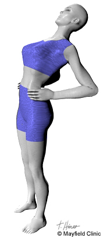

6 útiles ejercicios con el propio peso para una espalda fuerte
2021.12.08 10:40
Cardio Fuerza Nutrición Hábitos Historias de superación News Cardio Fuerza Nutrición Hábitos Historias de superación News Carrera de 24 horas: entrenamiento y nutrición para ultramaratón Fumar y correr: sustituye el tabaquismo por el running 15 min de ejercicio > > Los entrenamientos de running más eficaces 7 ejercicios para hombros: rápidos y efectivos 6 ejercicios para piernas con el propio peso (+ vídeos) Errores en los 9 ejercicios con el propio peso más comunes Cómo evitar comer demasiado después de entrenar Nutrición deportiva vegana: proteína, vitamina B12, hierro Qué cenar después de correr por la noche Cómo planificar entrenamientos: respuestas a tus preguntas Los beneficios del deporte en la salud mental Deporte y medioambiente: los 7 principios éticos para proteger la naturaleza Volver a entrenar: recuperación pos-COVID-19 Motivación fitness • Puedo con todo -75 kg • De tener sobrepeso a correr una maratón Entrenamientos personalizados para hacer en casa Los empleados de Runtastic que cambiaron su vida en 2017 Runtastic para Apple Watch: ¡vuelve la segunda pantalla! Fuerza
6 ejercicios con el propio peso para una espalda fuerte
por adidas Runtastic Team | 06.08.2020 | 4 minutos¿Quieres saber cómo conseguir una espalda fuerte? Los siguientes 6 ejercicios con el propio peso de la app adidas Training son una forma genial de entrenar la espalda desde casa. No necesitas ninguna equipación para hacerlos, solo el peso de tu propio cuerpo.
En general, los ejercicios con el propio peso requieren de mucha estabilidad en el core. Para desarrollar esta estabilidad, los músculos abdominales y de la espalda tienen que aprender a trabajar en equipo, ya que uno no puede ser más fuerte sin el otro. Por eso, además de ejercicios con pesas adicionales, como sentadillas, deadlifts y dominadas, un entrenamiento de espalda efectivo también debería incluir los siguientes ejercicios.
Los mejores ejercicios para la espalda en casa
Prueba estos 6 ejercicios con el propio peso para completar tu entrenamiento de espalda. Tanto si te estás iniciando en el running y quieres conseguir una zancada más fuerte y segura; tanto si ya tienes mucha experiencia y lo que quieres es mejorar tu ritmo de carrera; o simplemente quieres fortalecer el core para tu salud: los entrenamientos en casa para la espalda son la forma adecuada de conseguir crear músculo y alcanzar tus objetivos.
Y recuerda que debes prestar atención a tu respiración cuando añadas estos ejercicios para la espalda a tu rutina. Si lo cuidas, tu cuerpo te lo agradecerá. ¡Vamos allá!
1. Low Plank
Posición inicial:
Túmbate boca abajo. Dobla los codos justo debajo de los hombros y pon los antebrazos en el suelo. Estira las piernas y descansa los metatarsos en el suelo.
Cómo realizar el ejercicio:
Levanta las caderas y los muslos del suelo hasta que el cuerpo esté paralelo al suelo. Activa el core y asegúrate de que el cuerpo forma una línea recta desde la cabeza a los pies. Clava la pelvis para asegurarte de que la espalda está recta. No dejes que la espalda baja (la región lumbar) se hunda ni se levante. En la región torácica, lleva los hombros arriba y abajo.
2. High Plank
Posición inicial:
Ponte a cuatro patas. Pon las manos a la anchura de los hombros justo debajo de los hombros. Mantén los codos ligeramente flexionados.
Cómo realizar el ejercicio:
Estira las piernas y descansa los metatarsos del pie en el suelo. El cuerpo debería estar en posición diagonal con respecto al suelo. Activa el core y asegúrate de que el cuerpo forma una línea recta de la cabeza a los pies. Clava la pelvis para asegurarte de que la espalda está recta. No dejes que la espalda baja (la región lumbar) se hunda ni se levante. En la región torácica, lleva los hombros arriba y abajo.
3. Bridge
Posición inicial:
Túmbate boca arriba y descansa la cabeza en el suelo. Flexiona las rodillas para que los talones estén justo bajo las rodillas. Mantén los brazos a los lados con las palmas hacia abajo.
Cómo realizar el ejercicio:
Clava la pelvis para asegurar que tienes la espalda baja recta (la región lumbar). En la región torácica, lleva los omóplatos arriba y abajo. Levanta las caderas hacia arriba hasta que estén totalmente estiradas y aguanta en esta posición durante 10 segundos mientras aprietas los glúteos. Luego baja las caderas, sin tocar el suelo, y repite el ejercicio.
4. Superman
Posición inicial:
Túmbate boca abajo. Estira los brazos hacia adelante, con las palmas hacia abajo.
Cómo realizar el ejercicio:
Levanta la parte superior del cuerpo y luego las piernas, formando un arco. Asegúrate de que las rodillas y el pecho no tocan el suelo. Mantén la cabeza y el cuello neutrales. No estires demasiado el cuello y mantén la barbilla clavada. Puedes aumentar o reducir la tensión del cuerpo levantando o bajando un poco la parte superior del cuerpo y/o las piernas de forma simultánea.
5. Quadruped Limb Raises
Posición inicial:
Ponte a cuatro patas. Pon las manos a la anchura de los hombros y justo bajo los hombros. Dobla los codos ligeramente y pon las rodillas justo bajo las caderas. El cuerpo debería estar paralelo al suelo. Asegúrate de que el cuerpo forma una línea recta desde la cabeza hasta los glúteos. En la región torácica, lleva los hombros arriba y abajo.
Cómo realizar el ejercicio:
Estira el brazo derecho hacia adelante y la pierna izquierda hacia atrás mientras mantienes la espalda recta. Aguanta en esta posición de tres a diez segundos y luego baja hasta la posición inicial. Repite en cada lado.
6. Push-up
Posición inicial:
Ponte a cuatro patas. Pon las manos a la anchura de los hombros y justo bajo los hombros. Dobla ligeramente los codos. Estira las piernas y descansa los metatarsos en el suelo. Activa el core y asegúrate de que el cuerpo forma una línea recta desde la cabeza a los pies. En la región torácica, lleva los omóplatos arriba y abajo.
Cómo realizar el ejercicio:
Baja la parte superior del cuerpo y las caderas simultáneamente. Asegúrate de que activas el core durante todo el movimiento. Mantén los codos clavados y cerca del cuerpo, inspira a medida que vas bajando y espira a medida que te levantas.
7-minute back workout
¿Quieres más? En este vídeo hay un entrenamiento de 7 minutos para la espalda. ¡Que te diviertas!
***
CALIFICA ESTE ARTÍCULO
Calificación media
TAGS
Fitness Entrenamiento Motivación e inspiración adidas Runtastic Team ¿Quieres perder algo de peso, ser más activo o mejorar la calidad de tu descanso? El equipo de adidas Runtastic te da consejos útiles y te inspira para que alcances tus metas. Ver todos los artículos de adidas Runtastic TeamTAGS
Fitness Entrenamiento Motivación e inspiraciónLECTURAS IMPRESCINDIBLES
Fitness en casa ᐅ entrenamiento en pareja Motivación para entrenar: Cómo sacar lo mejor de tiTAMBIÉN ESTAMOS AQUÍ
Síguenos
Facebook Instagram YouTube LinkedInSobre el equipo
Empleo Blog de tecnología Partner Prensa y Medios AyudaMás
Términos y condiciones Política de privacidad Legal Idioma English Deutsch Français Italiano Español Português © Copyright runtastic GmbH 2021COMPARTE ESTE ARTÍCULO
×Gracias por tu valoración, ¡nos alegra saber que te ha gustado el artículo! Compártelo para inspirar a tus amigos.
Última carrera del año 2021 Participa gratis- Los mejores ejercicios para fortalecer la espalda y corregir la .
- Ejercicios de espalda en casa - Mundo Deportivo
- Los 15 mejores ejercicios para una espalda y dorsales en V
- Ejercicios para fortalecer la espalda sin hacernos daño
- 5 ejercicios básicos para lograr una espalda descomunal - AS .
- Los mejores ejercicios para acabar con el dolor de espalda
- 6 ejercicios con el propio peso para una espalda fuerte
- Los 11 mejores ejercicios para entrenar tu espalda en el .
- Guía de ejercicios para la parte baja de la espalda (Back .
- Ejercicios para la espalda en 15 minutos diarios - Mayo Clinic
- Los mejores ejercicios para fortalecer la espalda y corregir la .
en casa · Pues bien, este ejercicio de las dominadas deslizantes es uno de los más reputados a la hora de fortalecer y . - Ejercicios de espalda en casa - Mundo Deportivo
- Los 15 mejores ejercicios para una espalda y dorsales en V
- Ejercicios para fortalecer la espalda sin hacernos daño
- 5 ejercicios básicos para lograr una espalda descomunal - AS .
- Los mejores ejercicios para acabar con el dolor de espalda
- 6 ejercicios con el propio peso para una espalda fuerte
- Los 11 mejores ejercicios para entrenar tu espalda en el .
- Guía de ejercicios para la parte baja de la espalda (Back .
- Ejercicios para la espalda en 15 minutos diarios - Mayo Clinic
en casa · Pues bien, este ejercicio de las dominadas deslizantes es uno de los más reputados a la hora de fortalecer y .
